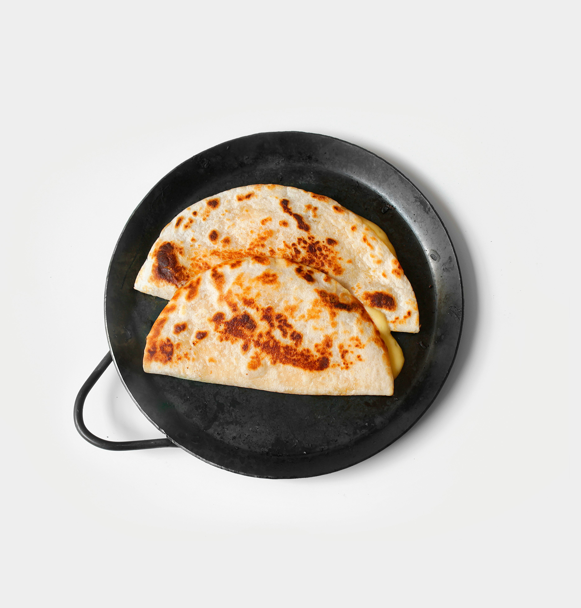

Home
Quesadilla

Description
This is the best quesadilla recipe in the world.
It has very few ingredients, homemade sauce and is a very healthy meal that you can cook in less than 30 minutes.
Ingredient
- wraps
- cheese of your choice
- chicken breast
- corn
- greek yoghurt
- lemon
- salt and pepper
Steps
- Prepare the chicken breast by cutting it with preferred dimensions. Marinade with salt, pepper, boya and some lemon
- Prepare the pan with some olive oil and cook the chicken between 5-8 minutes
- Throw in the pan the corn.
- After the chicken is done let it rest next to the pan and change it with the wrap.
- Put the chicken on the wrap, the cheese, some extra cheese and the greek yoghurt.
- Voilla the recipe was made in no time, now go eat some healthy quesadilla.